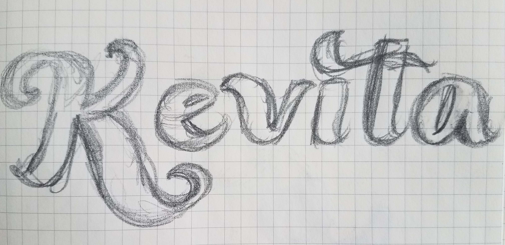

Wonk Variable Typeface, Senior Project

For my senior project, I developed a variable typeface based on metal type specimens found in MassArt's TJ Lyon's Collection.

What is a Variable font?
A variable font is a dynamic font that is controlled by one or more axiis. This technology was released in 2015, and since has been adopted by Adobe, Sketch and other design programs. The major benefits of variable fonts include smaller font sizes, and larger font families.

